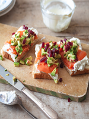

Toasts de saumon fumé, avocat, betteraves & crème fouettée
Ingrédients :
- • 1/2 avocat, coupé en petits cubes
- • 1 c. à soupe de ciboulette
- • 1/2 c. à thé de jus de citron
- • 2 c. à soupe de betteraves marinées, coupées en petits cubes
- • 2 tranches de pain blanc
- • 4 oz de saumon fumé
- • Sel et poivre
Pour la garniture
- • 1/2 tasse de crème à fouetter
- • 1 c. à thé de jus de citron
- • 1 c. à thé de purée de raifort
- • 1 c. à thé de sel
Pour la crème fouettée
Étapes
- • Dans un bol, fouetter tous les ingrédients « pour la crème fouettée » jusqu'à l'obtention d'une belle texture.
- • Réserver au frigo.
- • Dans un bol, mélanger l'avocat, la ciboulette et le jus de citron.
- • Assaisonner de sel et de poivre. Réserver au frigo.
- • Au moment de servir, faire griller les toasts puis les garnir de crème fouettée, de saumon fumé, du mélange d'avocat et de betteraves.